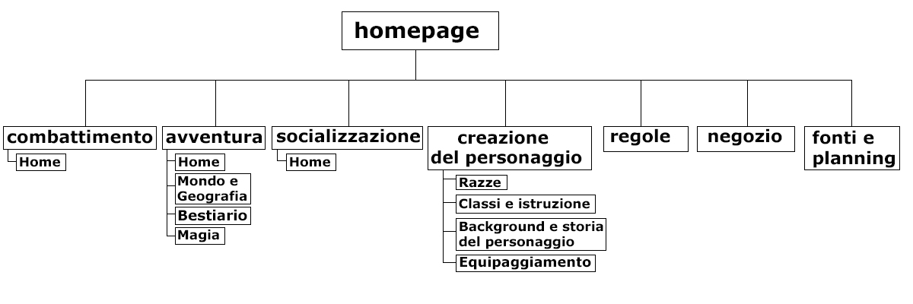
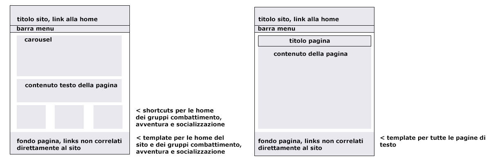

Fonti e costruzione del sito
Il fine del sito è essere un Hub per la raccolta e lo sviluppo del gioco roleplay Dice Adventure con l'obiettivo di creare un competitor della sua controparte più famosa, Dungeon&Dragons, e di altri simili, aiutando anche a publicizzarlo. Il target utente che questo sito e questo gioco vogliono raggiungere non è possibile definirlo precisamente, come prova possiamo usare come esempio Dungeon&Dragons: esso non raggruppa utenti che fanno parte solo di certe fasce di età, posizione sociale, razza o religione, ma raggruppa a chi interessa il gioco, e solo poi diversifica per attirare più gente possibile. come competitors il sito e il prodotto ne trovano diversi di simili, facilmente divisibili in tre gruppi: coloro che vogliono aggiungere qualcosa al gioco di D&D con la pubblicazione di libri e documenti da usare(legend of avantris); coloro che ispirati da D&D vogliono provare a costurire qualcosa di simile, come questo sito(DC20); altri giochi roleplay oltre a dnd (dnd)(pathfinder).
architettura del sito
wireframe del sito
look and feel
Le scelte fatte per l'architettura e il wireframe del sito sono state fatte per facilitare, velocizzare e semplificare l'uso del sito; questo è stato raggiunto creando due template su cui far basare tutte le pagine e il mantenimento fra le pagine di poter passare ad una qualsiasi pagina che il visitatore voglia con due o tre click. I colori usati sono tre: #e8e8ee per il footer, #585888 per il testo e #efefef per altre partiti del sito. Per i backgrounds non vengono usati solo colori ma anche immagini, come sulla home del sito in cui vi è il carousel e le tre colonne verso la fine della pagina.
Le immagini usate sono state tutte schiarite ed lavorate su photoshop, in modo da dare un attimo di colore senza che ostacolino la lettura
linguaggi e strumenti
I linguaggi web usati
I linguaggi web usati
Per la costruzione del sito sono stati usati solo due linguaggi: quello HTML e quello CSS
elementi di supporto alla creazione del sito
Per il supporto alla creazione del sito ho utilizzato bootstrap, un template dal libro HTML&CSS, progettare e costruire siti web di Jon Duckett, pinterest come fonte per le immagini e photoshop per lavorarle.
comunication strategy
background della scelta e del lavoro
background della scelta e del lavoro
La scelta del tema parte da un progetto personale
obiettivi comunicativi
Gli obiettivi comunicativi di questo sito sono: hub per tutti i lavori fra comunity e project managers del prodotto; raccolta delle informazioni del prodotto o almeno una parte tale da poter giocare solo con quella; spingere l'utente a provare il gioco, a fantasticare ed essere coinvolto nel progetto.
target utente
Il target utente per questo sito e il suo prodotto è colui a cui piace fantasticare e uscire dalla vita di tutti i giorni, dalla sua routine e come già detto in precedenza, questo è un tema che non è limitato da limiti sociali, razziali o religiosi. Nonostante la difficoltà nel individuare categorie specifiche, il sito e il prodotto partono mirando a coloro che hanno già giocato o sono interessate ai giochi di ruolo e successivamente, dopo aver sviluppato una comunity base, mirano a diversificarsi e attirare altre categorie. Per raggiungere questi target utenti è in progetto di prendere contato con content creators. L'esca per attirare nuovi utenti è lo sviluppo del sito e soprattuto del prodotto coinvolgendo la comunity base.
promozione
Più che la promozione del sito promuoverei il prodotto e utilizzerei il sito come mezzo di promozione di quest'ultimo. La promozione la porterei principalmente avanti entrando in contatto con le varie comunità di giocatori di Dungeon&Dragons e di altri giochi roleplay, il passaparola e prenderei contatto con youtubers e altri content creators per l'ampiamento della comunity. Arrivando ad avere un modo per formare e sviluppare una comunity porterebbe il prodotto e di conseguenza anche il sito, ad arricchirsi e rafforzarsi.
valutazione dei risultati
per sapere se il progetto ha successo guarderei diversi punti: vedere crescere una comunityfar provare il prodotto ad un gruppo, vedere la quantità di persone che passa per il sito, la quantità di persone che hanno offerto su patreon e kickstarter per lo sviluppo del gioco stesso, aumentare l'interesse fra i content creators.